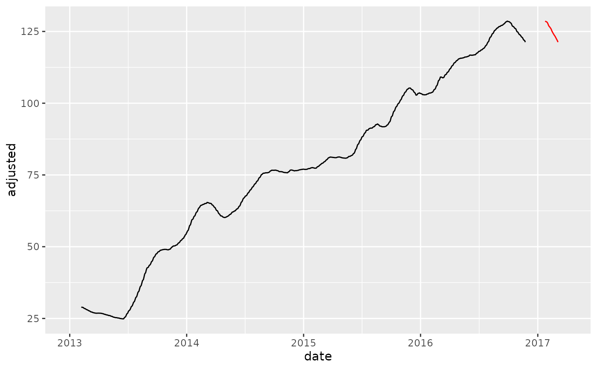
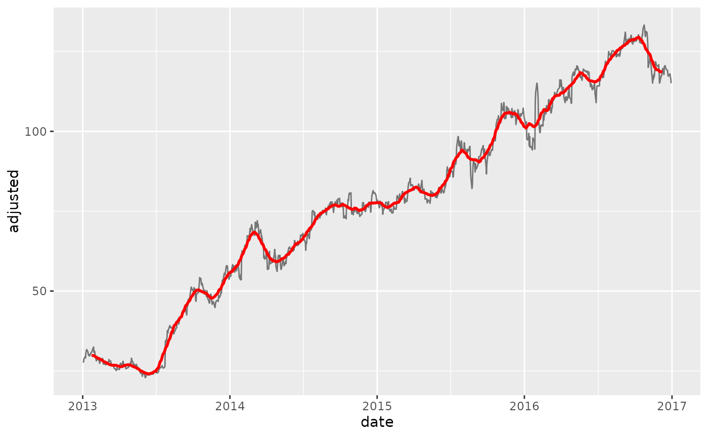

step_slidify creates a a specification of a recipe
step that will apply a function
to one or more a Numeric column(s).
step_slidify( recipe, ..., period, .f, align = c("center", "left", "right"), partial = FALSE, names = NULL, role = "predictor", trained = FALSE, columns = NULL, f_name = NULL, skip = FALSE, id = rand_id("slidify") ) # S3 method for step_slidify tidy(x, ...)
| recipe | A recipe object. The step will be added to the sequence of operations for this recipe. |
|---|---|
| ... | One or more numeric columns to be smoothed.
See |
| period | The number of periods to include in the local rolling window. This is effectively the "window size". |
| .f | A summary formula in one of the following formats:
|
| align | Rolling functions generate
|
| partial | Should the moving window be allowed to return partial (incomplete) windows instead of NA values. Set to FALSE by default, but can be switched to TRUE to remove NA's. |
| names | An optional character string that is the same
length of the number of terms selected by
|
| role | For model terms created by this step, what analysis role should they be assigned?. By default, the function assumes that the new variable columns created by the original variables will be used as predictors in a model. |
| trained | A logical to indicate if the quantities for preprocessing have been estimated. |
| columns | A character string of variables that will be
used as inputs. This field is a placeholder and will be
populated once |
| f_name | A character string for the function being applied.
This field is a placeholder and will be populated during the |
| skip | A logical. Should the step be skipped when the recipe is baked by bake.recipe()? While all operations are baked when prep.recipe() is run, some operations may not be able to be conducted on new data (e.g. processing the outcome variable(s)). Care should be taken when using skip = TRUE as it may affect the computations for subsequent operations. |
| id | A character string that is unique to this step to identify it. |
| x | A |
For step_slidify, an updated version of recipe with
the new step added to the sequence of existing steps (if any).
For the tidy method, a tibble with columns terms
(the selectors or variables selected), value (the feature
names).
Alignment
Rolling functions generate period - 1 fewer values than the incoming vector.
Thus, the vector needs to be aligned. Alignment of the vector follows 3 types:
Center: NA or partial values are divided and added to the beginning and
end of the series to "Center" the moving average.
This is common for de-noising operations. See also [smooth_vec()] for LOESS without NA values.
Left: NA or partial values are added to the end to shift the series to the Left.
Right: NA or partial values are added to the beginning to shif the series to the Right. This is common in
Financial Applications such as moving average cross-overs.
Partial Values
The advantage to using partial values vs NA padding is that
the series can be filled (good for time-series de-noising operations).
The downside to partial values is that the partials can become less stable at the regions where incomplete windows are used.
If instability is not desirable for de-noising operations, a suitable alternative
is step_smooth(), which implements local polynomial regression.
Time Series Analysis:
Engineered Features: step_timeseries_signature(), step_holiday_signature(), step_fourier()
Diffs & Lags step_diff(), recipes::step_lag()
Smoothing: step_slidify(), step_smooth()
Variance Reduction: step_box_cox()
Imputation: step_ts_impute(), step_ts_clean()
Padding: step_ts_pad()
Main Recipe Functions:
library(recipes) library(tidyverse) library(tidyquant) library(timetk) # Training Data FB_tbl <- FANG %>% filter(symbol == "FB") %>% select(symbol, date, adjusted) # New Data - Make some fake new data next 90 time stamps new_data <- FB_tbl %>% tail(90) %>% mutate(date = date %>% tk_make_future_timeseries(length_out = 90)) # OVERWRITE EXISTING COLUMNS ----- # Create a recipe object with a step_slidify rec_ma_50 <- recipe(adjusted ~ ., data = FB_tbl) %>% step_slidify(adjusted, period = 50, .f = ~ AVERAGE(.x)) # Bake the recipe object - Applies the Moving Average Transformation training_data_baked <- bake(prep(rec_ma_50), FB_tbl) # Apply to New Data new_data_baked <- bake(prep(rec_ma_50), new_data) # Visualize effect training_data_baked %>% ggplot(aes(date, adjusted)) + geom_line() + geom_line(color = "red", data = new_data_baked)#> Warning: Removed 49 row(s) containing missing values (geom_path).#> Warning: Removed 49 row(s) containing missing values (geom_path).# ---- NEW COLUMNS ---- # Use the `names` argument to create new columns instead of overwriting existing rec_ma_30_names <- recipe(adjusted ~ ., data = FB_tbl) %>% step_slidify(adjusted, period = 30, .f = AVERAGE, names = "adjusted_ma_30") bake(prep(rec_ma_30_names), FB_tbl) %>% ggplot(aes(date, adjusted)) + geom_line(alpha = 0.5) + geom_line(aes(y = adjusted_ma_30), color = "red", size = 1)#> Warning: Removed 29 row(s) containing missing values (geom_path).